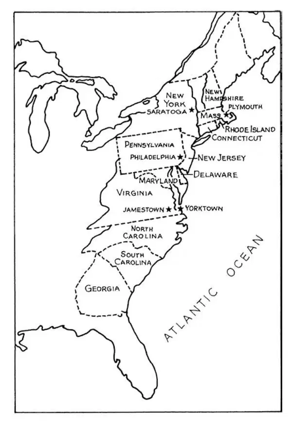
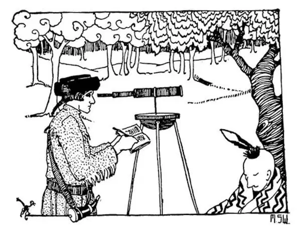
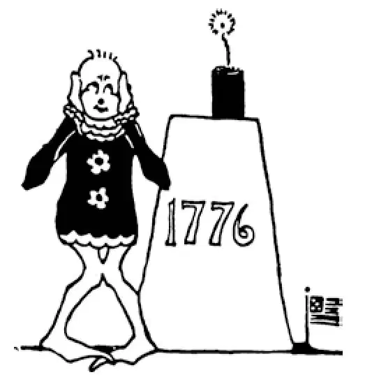

75
America Gets Rid of Her King
美国摆脱了国王

DID you know that we once had a king?
His name was George.
No, George Washington wasn't a king.
This was another George.
You remember the Stuarts in England—James, Charles, and the rest of the family who ruled England for a hundred years from 1600 to 1700. Well, about 1700 England ran out of Stuarts—there were no more Stuart children.
As England had to have another king, they asked a distant relative of the royal family over from one of the German states to rule England. Yes, from Germany to rule England. His name was George, and the English called him George I. George couldn't even speak English. He was German and loved his own country much better than England. You can imagine what sort of king he was. His son, George II ruled after him, although he, too, was more German than English. But when the grandson, George III, came to the throne he was a born and bred Englishman. It was in this grandson's reign, in the reign of George III, that our country, the United States, was born.
When a wheel turns over, we call it a revolution , which is a big name for a little thing.
When a country turns around, we also call it a revolution, which is a big name for a big thing.
Our country had started with the two little settlements, or colonies , as they were called, of Jamestown and Plymouth. It had grown and grown until there were a number of settlements along the coast of the Atlantic Ocean. Most of the people who had settled here first were English, and the king of England ruled over them. Soon people from other countries like Germany, Holland, Scotland, and Ireland came here. Africans were brought against their will to work as slaves. The king of England ruled over all these people, too. The king asked these people to send him money, which was called taxes . Now, the money collected from taxes was not, of course, for the king to put in his pocketbook to use as he liked. It was supposed to be spent on the people who were taxed, to be used for roads, schools, police, and such things that are for the good of all.
These people along the coast, who were paying money or taxes to the king far off across the water, thought they ought to have a vote to say how this money should be spent and on what it should be spent. But they did not have a vote, and they thought they ought not to have to pay taxes to the king away off in England.
One of the leading citizens of America at this time was a man named Benjamin Franklin. He was the son of a candlemaker, but from a poor boy, who had once walked the streets of Philadelphia with a loaf of bread under each arm, he had risen to a very honored position in the country. He had learned to be a printer and had started one of the first and best newspapers in the United States. He was a great thinker and had invented a stove and a lamp and had succeeded in getting electricity from the lightning in the clouds by flying a kite with a wire during a storm. He was one of the Wise Men of the West.

Map of the thirteen original states（最初十三个州的地图）
Franklin was sent over to England to try to get the king to change his mind about taxing the colonies or to bring about some sort of agreement with him. But King George was hardheaded, and Franklin was unable to stop the king from doing what he had made up his mind to do.
The people in America, finding that talking did no good, started in to fight. They raised an army. Then they tried to find a good man to command the army. Such a leader must be honest and brave; he must have a good mind; he must love his country; and he must be a good fighter. They looked around for a man who had all these qualities, and they found one. The man they picked was honest and brave. A legend grew up that when this man was a boy, he had cut down a favorite cherry tree of his father's just to try a new hatchet he had been given. When this boy was asked by his angry father if he had done it, he answered honestly and bravely, “I cannot tell a lie; I did.” Of course, now you know who it was—George Washington. We know now that this story was made up by a man who wrote a book about George Washington. It's not true, but it makes a good story, doesn't it?
George learned to be a surveyor—that is, a man who measures land—and when only sixteen years old he was employed to survey the large farm of Lord Fairfax in Virginia; that showed he had a good mind. He then had been a soldier and had fought bravely and well in the French and Indian War, as the Seven Years' War was called here. That showed that he loved his country and was a good fighter. George Washington was chosen to lead the American army against the English.

George Washington surveying Lord Fairfax’s farm
乔治•华盛顿在测量费尔法克斯勋爵的农场
The Americans did not at first think of starting a new country. They simply wanted the same rights that Englishmen in England had. They soon found out that there was only one way to get those rights, and that was to start a new country, independent of England. So a man named Thomas Jefferson wrote a paper which was called a Declaration of Independence—can you say it?— because it declared that the colonies were going to be independent of England. There were fifty-six Americans chosen by the people to sign it. Each one of the signers would have been put to death as a traitor to England if the United States had not won, and each signer knew it, yet he signed it nevertheless. But just signing this paper didn't make England give up the colonies. Oh, no! King George's armies tried to stop the colonies from getting away from the rule of England.
Washington had a very small army with which to fight the English army, and very little money with which to pay the soldiers or to supply them with food or clothes or powder and shot. One winter the soldiers nearly froze and starved to death, for they had little clothing and hardly any food but carrots, and it seemed as if the war could not go on unless they got help. Yet Washington kept up their spirits.
Benjamin Franklin was sent across the ocean, not to England this time of course, but to France to see if he couldn't get some help from that country. France hated England, because France had lost part of America, Canada, in the Seven Years' War, but at first France would not help. France took little interest in the fight, for Washington's army had lost a number of battles against the English, and people don't like to back a loser. The year after the Declaration of Independence, the American army beat the English badly at a place called Saratoga in New York State. The king of France then became more interested, and then he sent help to the colonies to carry on the war. A young French nobleman named Lafayette hurried over from France and fought under General Washington and did so well that he made a great name for himself.
England, seeing that things were going against her, now wanted to make peace with the Americans and give them the same rights that English citizens had, but it was then too late. At the beginning of the war, the Americans would have agreed to this and been glad to agree, but now they would agree to nothing less than complete independence from England; and so the war went on, for England would not let the colonies go.
The English had been beaten by the Yankees, as they called them, in the North, at Saratoga. Then they sent their general, Lord Cornwallis, to the south of our country to see if he could beat the people there. General Greene was put in command of the southern American soldiers. Lord Cornwallis tried to fight Greene, but Greene led Cornwallis a merry chase around the country until he was all tired out and finally went into a little place called Yorktown on the coast of Virginia. Here, Cornwallis and his army were caught fast so that they could not get out. On the side of the land was the American army, and on the ocean side were the French warships that had been sent over to help. Cornwallis had to surrender.
King George then said, “Let us have peace”; and in 1783 the war was ended by a treaty of peace, eight years after it had started, and the colonies were independent of England. This was called the Revolutionary War, and after it was over our country was called the United States.
There were just thirteen of these original colonies that joined as partners in this Union. That is why there are just thirteen stripes in our flag. Some people think thirteen is an unlucky number; but our flag with its thirteen stripes still waves over the land, and it has brought us good luck; don't you think so?
Washington was made the first President, and so he is called the Father of his Country; the First in War, the First in Peace, and the First in the Hearts of his Countrymen.
【中文阅读】
你知道美国曾经有过一个国王吗？
他的名字叫乔治。
不，乔治•华盛顿不是国王。
这是另一个乔治。
你还记得英国的斯图亚特王朝——从公元1600年到1700年詹姆斯、查理以及这个家族的其他成员统治着英国。大约在公元1700年英国把斯图亚特这个家族的人用完了——斯图亚特家族已经绝后了。
因为英国必须再找一位国王，所以他们从德国一个州请了一位王室的远亲来统治英国。是的，从德国过来，统治英国。他的名字是乔治，英国人称他为“乔治一世”。乔治甚至不会说英语。他是德国人，热爱自己的国家远远胜过英国。你可以想象到他是什么样的国王了。他的儿子乔治二世后来继任，不过他也算不上是英国人，还是德国人。但是当他的孙子乔治三世即位时，他就是一个土生土长的英国人了。正是在他孙子的统治时期，即在乔治三世的统治时期，美国诞生了。
当轮子转动时，我们称之为“旋转”，这是一个大词在表示一件小事。
一个国家发生巨变时，我们也称之为“革命”，这是一个大词在表示一件大事。 ［1］
美国从两个小定居点或按当时的叫法“殖民地”——詹姆斯敦和普利茅斯发展而来。它逐渐发展直到大西洋沿岸有了许多定居点。一开始在这里定居的大多数人是英国人，受英国国王统治。不久，其他国家的人像德国人、荷兰人、苏格兰人、爱尔兰人也来到这里。非洲人被强迫带到这里当奴隶。英国国王也统治着所有的这些人。国王要求这些人送钱给他，也就是所谓的“纳税”。征收来的税款当然不是让国王放进自己的钱包，想怎么花就怎么花。它应该花在纳税人身上，用于道路建设、学校教育、社会治安以及公共福利方面等等。
在大西洋海岸的这些人，交钱纳税给远在大洋另一边的国王，他们认为自己应该有投票权来决定这些钱应该怎么花和花在什么方面才对。但是他们没有投票权，于是就认为不必再给远在英国的国王纳税了。
那时美国领头人中有一个名叫本杰明•富兰克林的公民。他是一个蜡烛工人的儿子，小时候是个穷孩子，曾经每只胳膊下各夹着一条面包在费城穿街走巷。但是后来他飞黄腾达，成为在美国备受尊敬的人。他在印刷厂当过学徒，后来创办了美国最早也是最好的一份报纸。他是伟大的思想家，还发明过炉子和灯。有一次他在暴风雨中用一根金属线放风筝，成功地从云层中的闪电引导出电。他是西方哲人之一。
富兰克林被派往英国，试图说服国王在殖民地征税这一问题上改变想法，或者和国王达成某种协议。但是国王乔治很顽固，富兰克林无法阻止国王去做他打定主意要做的事情。
美国人民发现谈判没有用，就开始斗争。他们招募了一支军队。这时他们想找个合适的人来率领这支军队。这样一位领导者必须诚实勇敢，他必须有敏锐的头脑，他必须热爱自己的国家，他必须是个优秀的战士。他们四处寻找具备所有这些品质的人，最后他们找到了一个。他们选中的这个人既诚实又勇敢。还产生了一个传说，据说这个人还是个小男孩时，他只是为了试试自己得到的新斧子是不是锋利便砍倒了他父亲钟爱的一棵樱桃树。当生气的父亲问这个男孩是否是他干的，他诚实勇敢地回答：“我不能撒谎，是我砍的。”当然，现在你知道他是谁了——乔治•华盛顿。如今我们知道这个故事是一个写乔治•华盛顿传记的人编的，不是真事。但是这算是一个好故事，不是吗？
乔治学过当测量员——就是测量土地的人——当他只有16岁的时候，他被雇去测量费尔法克斯勋爵在弗吉尼亚的大农场；这说明他有聪明的头脑。后来，他当了兵，在法国和印第安人的战争中作战勇敢，表现突出。这场战争也被称为“七年战争”。这表明他很爱国，而且英勇善战。乔治•华盛顿被选出来，领导美国军队反抗英国人。
美国人民一开始并没想到要成立一个新的国家。他们只想获得和住在英国的英国人同样的权利。很快他们发现要想得到那些权利，只有一条路可走，那就是建立一个新国家，脱离英国而独立，于是一个叫托马斯•杰斐逊的人起草了一份称为《独立宣言》的文件——你能把这题目念出来吗？——因为文件宣布殖民地将脱离英国，成为一个独立的国家。五十六个美国人被人民推选出来签署这份宣言。如果美国不能取得胜利，每一个签名者都要作为英国的叛国者被处死，每一个签名者心里都清楚这一点，但是他们还是义无反顾地签了名。不过仅仅签署这份文件无法让英国放弃这些殖民地。嗨，他们绝对不会！国王乔治的军队对殖民地要摆脱英国的统治进行了阻止。
华盛顿只有一支小军队同英军对抗，军费少得可怜，没有军饷发给士兵，粮食、衣物供应不足，炸药和子弹匮乏。有一个冬天，士兵们差一点冻死、饿死，因为他们没有什么衣着，除了胡萝卜，也几乎没有吃的了，当时的情形看起来好像这场战 争无法继续下去了，除非他们能得到援助。但是华盛顿激励他们，保持士气。
本杰明•富兰克林被派到大洋彼岸，这次当然不是去英国，而是去法国探一探，看看能否从那里得到一些援助。法国痛恨英国，因为在七年战争中，法国失去了美洲的那部分土地——加拿大，但是最初法国不愿意帮忙。法国对打仗没什么兴趣，因为华盛顿的军队在和英军的交战中，吃了好几次败仗，人们通常不愿支持失败者。《独立宣言》发表后的第二年，美国军队在纽约州一个叫萨拉托加的地方大败英国人。法国国王这时对这场战争才有点兴趣了，于是他向殖民地提供援助，让这场战争继续打下去。一个名叫拉菲德的法国年轻贵族从法国匆匆赶来，在华盛顿将军手下作战，他作战英勇，打出了很大的名气。
英国眼看局势对自己越来越不利，现在想和美国人民讲和，同意给予他们与英国公民同样的权利，但是已经太迟了。战争刚开始时，美国人民可能会同意讲和，而且会高高兴兴地同意，但是他们现在除了彻底从英国独立出来，其他什么都不会同意；于是战争继续，因为英国不愿放弃这些殖民地。
英国人在北方的萨拉托加被他们所称的“北方佬”打败后，又派他们的将军康华里勋爵去南方寻找取胜的战机。格林将军被任命指挥南方的美军。康华里勋爵想和格林正面作战，但是格林东躲西闪带着康华里在各地兜圈子，直到康华里的军队完全累垮了，最后来到了弗吉尼亚海岸边一个叫约克镇的小地方。康华里和他的军队在那里深陷重围，无法逃脱。陆地这边是美国军队，海洋那边是派来增援的法国军舰。康华里只得投降。
于是国王乔治说：“让我们讲和吧”；在1783年双方达成合约，结束了打了八年之久的战争，美国殖民地脱离英国而独立。这次战争被称为“独立战争”，战争结束后，这个获得独立的国家被称为美国。
这个联邦国家仅由十三个原先的殖民地合伙组成。这就是为什么美国国旗上仅有十三道彩条。有些人认为十三是个不吉利的数字；但是有着十三道彩条的美国国旗依然在这片土地上飘扬，它已经给美国人带来了好运；你不这样认为吗？
华盛顿被任命为美国第一任总统，所以他被称为“国父”；他是战争时期的第一人，和平时期的第一人，美国国民心目中的第一人。

公元1776年